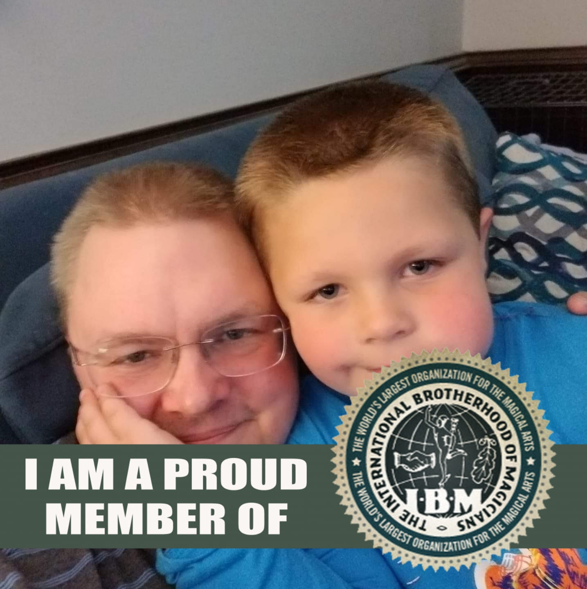

|  | Christopher Mills
Web Developer
|
I graduated from New River Community College with an Associate degree in Electronics specializing in Fiber Optics. I went on to work as an electronic technician for 5 years before moving onto being an electrician for over 10 years. From there I gained experience in switchgear maintenance and being a relay technician.
I have been programming since I learned my first BASIC program at 5 years old. I taught myself all I could learn about programming including BASIC, HTML, CSS, JavaScript, Python, and C++. I learned all I could about Windows, Linux, MS Office, etc...
| Dates | Work |
|---|---|
| 2018-Present | Senior Service Technician at Beneficial Systems |
| 2015-2018 | Relay Technician at ITAC |
|
|